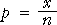
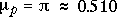
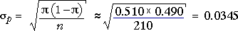

| σp = |
Distribution of sample proportion
If our data consists of x successes from a sample of size n , the proportion of successes is

It can be shown that p has a distribution with mean and standard deviation
μp = π
| σp = |
(These results come from the fact that x has a binomial distribution.)
Distribution of estimation error
When the proportion p is used to estimate π, the estimation error is p - π. The error distribution therefore has the same shape as that of p, but is shifted to have mean zero. The bias and standard error of the sample proportion are therefore
bias = μerror = 0
| standard error = σerror = |
Standard error from data
Unfortunately, the formula for the standard error of p involves π, and this is unknown in practical problems. To get a numerical value for the standard error, we therefore replace π with our best estimate of its value, p .
bias = μerror = 0
| standard error = σerror = |
Management succession plans
Many small companies do not worry about the consequences of executives resigning, despite the disruption that this can cause to the company.
Coopers & Lybrand surveyed 210 chief executives of fast-growing small companies and the table below shows the number whose companies had a management succession plan to deal with such departures.
| Management succession plan? | Frequency |
|---|---|
| Yes | 107 |
| No | 103 |
| Total | 210 |
What is the probability that such a company will have a management succession plan?
There is some underlying probability, π, that a small fast-growing company will have a management succession plan, and our best estimate is the sample proportion, 107/210 = 0.510.
How accurate is this estimate?
The proportion of companies out of n = 210 with a succession plan has a distribution with mean and standard deviation,


The diagram below initially shows this distribution.
Use the pop-up menu to display the (approximate) distribution of the estimation error. Observe that the error distribution is simply shifted to make it centred on zero.
From the error distribution (or from the standard error), it is unlikely that the estimate of the probability that this type of company has a succesion plan, p = 0.510, will be more than 0.1 in error.
Note that both distributions are discrete since the number of successes, x, has a discrete binomial distribution. Since the sample size is large however, its shape is close to a normal distribution.